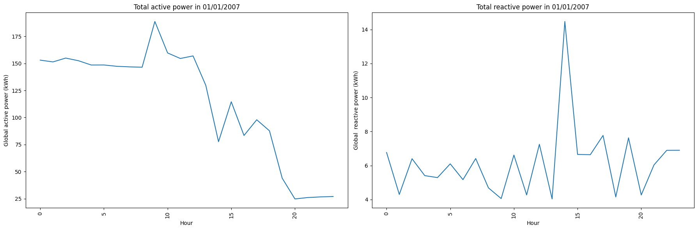

In the future, we will create an analysis model that allows you to keep track of your electricity consumption data by visualizing the file you upload to our website.
You can have a general view of your household global active and reactive power over a one-month period :
Or you can also look at which time of the day does the global active and reactive power rise the most:

You can compare the active power and reactive power consumed by each rooms in your house :
Most importantly, you are able to see the relationship between each room consumption with the total number of your household. By this, you can come up with a strategy to efficiently reduce the total active power by altering your usage with each room.